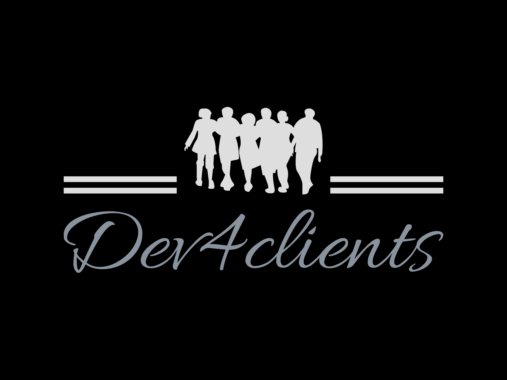

Dev4Clients

Summary
Hello, I'm Dev4clients,
your friendly neighborhood developer!
With a passion for crafting digital solutions,
I thrive on turning complex problems into elegant solutions.
Whether it's web development, app creation, or software engineering,
I love bringing ideas to life through clean code and innovative design.
As your dedicated developer, I'll work closely with you to understand your vision, collaborate on ideas, and deliver exceptional results.
Together, let's build a digital world that leaves a lasting impression.
Get ready to embark on a journey of creativity, functionality, and success with Dev4clients!
Education
- Online Certifications:
June 2016 - April 2018
- Web Development bootcamp, AppBrewerey Online academy
- Mobile App Development Course, AppBrewerey Online Academy
Work Expereince
- Junior Web Developer - Dev4clients Inc.
December 2020 - Present
- Collaborated with a team of developers to create responsive and user-friendly websites
- Implemented front-end designs using HTML, CSS, and javascript
- Assited in troubleshooting and bug fixing to ensure smooth website functionality
- Freelance Mobile App Developer
June 2017 - May 2020
- Designed and developed mobile applications for clients acorss various industries
- Utilized skills in UI/UX design, coding, and testing to create intuitive and high-performing apps
- Communicated closely with clients to understand their requirements and deliver customised solutions
- Internship, AppBrewery Tech Startup
- Assisted senior developers in building and maintaining web applications
- Gained hands-on experience in database management and backend development
- Participated in team meetings and contributed ideas for improving application performance
Skill:
- Programming languages: HTML, CSS, JavaScript, Python
- Web Development: Responsive Design, Front-end Development, Back-end Development
- Mobile App Development: UI/UX Design, Cross-platform Development, Testing and Debugging
- Database Managment: SQL, MongoDB
- Version Control: Git
- Problem Solving: Troubleshooting, Bug Fixing, Analytical Thinking
- Collaboration: Teamwork, Communication, Client Interaction
- Continuous Learning: Online Certifications, Keeping up with Industry Trends
Awards and Cerifications
- Execellence in Web Development - AppBrewery Academy
- Outstanding Perfomance in Web Development and Mobile App Development - Dev4Clients Inc
Others
© Dev4Clients. All rights reserved.